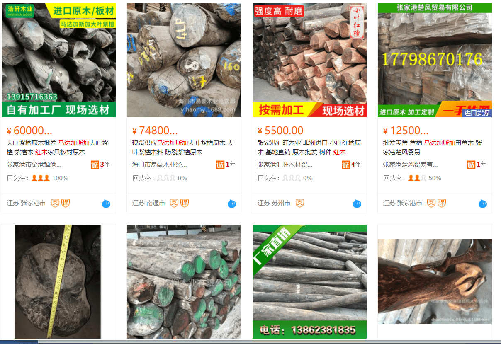

今年初，因走私象牙而臭名昭著的 “象牙王后” 在坦桑尼亚被判处15年刑期，几乎是同一天，中国游客因走私变色龙在马达加斯加被捕。两起案件引起了中国媒体的广泛讨论——野生动植物的保育已经是中国人民关注的重要议题。
实际上，当今世上交易最广泛的非法野生产品既非象牙，也非变色龙，而是红木。根据联合国毒品和犯罪问题办公室的数据，按价值或数量衡量，红木是世界上贩运最多的动植物。它的交易远远超过大象象牙，犀牛角和穿山甲鳞片，也被称作“森林象牙”。而几乎所有红木目的地都是中国。
© unodc
红木的运送路径：橙色是起点，蓝色是终点。中国，马来西亚和阿联酋均是红木的主要目的地。来源：https://www.unodc.org/documents/wwcr/Rosewood.pdf
原产地马达加斯的非法砍伐
近期，耶鲁大学林业与环境研究学院刊登一份报道，讲述了濒临灭绝的红木从马达加斯加进入中国过程中的腐败和破坏。
红木是一类生长缓慢的阔叶树种，包括黄檀，紫檀等的统称。目前，世界各地的红木资源正急速减少，国际社会不断在寻求应对措施。2013年，“濒危野生动植物种国际贸易公约”（CITES）将所有类型的马达加斯加红木列入附录，禁止贸易（在极少数情况下，当地CITES颁发可持续性许可证情况下可交易）。在2017年，CITES更是把世界上所有的黄檀种以及其他红木列入禁止贸易名单。
但国际公约的实施，需要原产国的配合。在马达加斯加，尽管政府已经与CITES合作，但当地许多木材大亨本身就是政治家，或者与政府人物关系密切。政府在控制红木贩运上明显缺乏意愿，在近年尤为明显：近年阻止非法贸易的活动人士多次遭遇政府起诉。2016年，在一场游行示威后，马达加斯加最有名的环保人士Clovis Razafimalala被捕（讽刺的是他没有参与游行），在经历了10个月的审前拘押后，他被判五年刑期。Clovis的组织的主要工作是对抗非法砍伐和贩运。2015年，另一位环保人士Armand Marozafy在Facebook上谴责两名非法砍伐红木的组织者，被指控诽谤，被判处6个月的监禁。然而到目前为止，還没有大型非法木材贩运者入狱。
红木濒临灭绝，原产国却没什么保护的意愿，这是为什么？其中一个原因是这种木材的价值极高，一张红木打造的仿明清家具，能够标出100万美元的价格。而购买者多来自中国。
进口地中国缺乏监测
红木家具是明清以来对稀有硬木优质家具的统称。“文化大革命”时，破四旧立四新，打倒“封资修”，这类家具大都被当作旧时代的遗孽而被铲除。但随着经济发展和收入的增高，红木仿古家具的需求急剧上升，一些家庭以拥有这样的家具作为身份的标志。然而，制造红木家具的木材在中国已经十分罕见，只能依靠进口。
中国进口的红木原木和锯材量及其来源。来源：https://www.forest-trends.org/wp-content/uploads/2015/12/doc_5094.pdf
中国是红木贩运的主要目的地，本來东南亚入口的红木较为普遍，但自2010年起，来自非洲的红木原木和锯材迅速占据主流，根据环保组织收集的中国海关数据，2010-2014间，中国从非洲进口的红木原木及锯材增加了700%。
据英国智库查塔姆研究所（Chatham House）2010年的一项分析显示，中国是世界上最大的非法木材进口国，估计总进口量的20％属于非法来源。在这些进口的木材中，要分辨哪些是属于CITES禁运的红木并不简单。中国正在改善其进口监测系统。根据耶鲁大学刊登的报告，张家港海关实验室对进入港口的原木进行检测 ，当木材物种无法在视觉上识别时，检查员会将样品切片并使用显微镜检查; 生长环，血管和细胞结构有助于确定物种。较大的国家实验室，如中国林业科学院北京实验室，已开始尝试使用DNA分析、稳定同位素鉴定和气相色谱等手段，但是这些技术仍在开发中，且由于成本问题，无法广泛采用。
新的监测技术尚未足以解决非法贩运问题。同时，输入过程中的腐败仍然严重。在耶鲁大学刊登的报道中，一位来自中国的木材研究员说：“我们知道大部分原木都是非法砍伐的，但当他们以‘正确’的文件进入中国时，它们就变得合法了，中国经销商贿赂[海关]官员购买CITES认证。”而当原木进入中国以后，则有更多的“操作空间”，一位中国经销商评论道:“这是一个非常‘脏’的环境，做这个生意不可能没有腐败。”

尽管自2013年CITES已禁止所有马达加斯加黄檀属的木材的交易，目前在互联网上仍能看到大量卖家销售来自该国的卢氏黑黄檀（俗称大叶紫檀）。
谁是绿色赢家？
不久前，来自美国国家航空航天局的卫星探测器发现，从90年代起，地球绿化覆盖有显著增长，而其中最大的贡献来自于中国。2017年，中国的森林覆盖率达到21.6%，几乎是1999年的2倍。而中国绿化覆盖的增长很大程度上来自扩大森林的计划。
而在马达加斯加，自20世纪50年代以来，森林却消失了将近一半。卫星数据显示，森林砍伐在2017年达到创纪录的水平，超过50万公顷的森林被砍伐。生物多样性也受到极大的影响，生活在丛林中的狐猴面临着灭绝的危险。

生活在保护区的狐猴 。© Amnesty International (Photo: Selina Nelte)
在马达加斯加生活的华侨和华裔不在少数，尤其是在盛产红木的东海岸，许多世代生活在这里的混血华裔，具有强烈的中国身份认同。然而，在当地，人人皆知许多自然资源最终流向中国，他们因此处境尴尬，乃至遭受歧视，例如在2016年的一个反对开采矿产的游行中，抗议人群甚至打出了“马达加斯加不是中国人的”口号 ，让当地华侨陷入窘境。
保护我们共同生活的地球，居住在健康的生态环境中，是人类共同的美好追求。在消费木材时，也许我们都应该问一问，在保护森林的同时，放任非法木材源源不断的输入，让地球另一个角落上的绿色的森林因此迅速消失、沙化……只因为客厅中需要用这百年巨木打造的家具来彰显身份，这样的做法，与建设“人类命运共同体”的愿景是不是背道而驰？
延伸阅读：